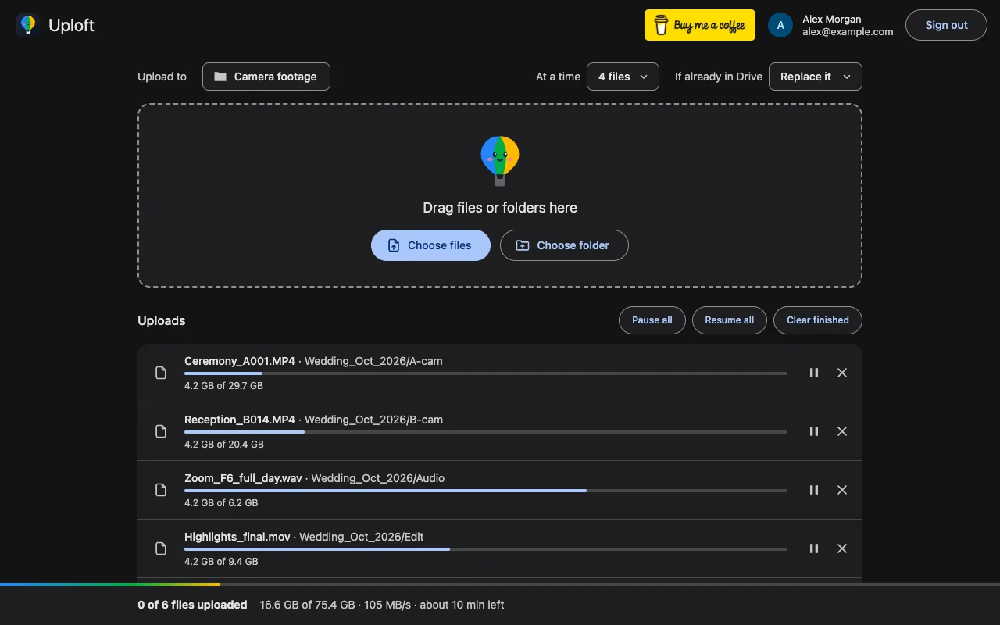

How do I upload a large video to Google Drive?
Published · Updated · By Sai Nath
On a computer, open drive.google.com, click New ▸ File upload and choose the video. Drive accepts a file of up to 5 TB, so size is rarely the problem; time is. A 20 GB video on a 20 Mbps upload takes about 2 hours 13 minutes, so keep the tab open and the computer awake until it finishes.
This guide comes from the maker of Uploft, the Chrome extension mentioned below. Google's limits and steps link to Google's own pages and were checked on 29 October 2026; what the extension does comes from its source code.
How to upload a large video from the browser
- On your computer, go to drive.google.com.
- At the top left, click New ▸ File upload. You can also drag it into a folder in Drive.
- Choose the video file. Drive shows its progress in an upload panel.
- Keep the tab open, the computer awake and the connection up until the panel says the upload is done.
These are the steps on Google's help page for uploading files and folders. Work out the wait first: divide the size in megabits by your upload speed. One gigabyte is 8,000 megabits, so a 20 GB video is 20 × 8,000 = 160,000 megabits; at 20 Mbps that is 160,000 ÷ 20 = 8,000 seconds, which is 2 hours 13 minutes. Use your upload speed, not the download speed your provider advertises.
Why does a big video upload fail partway?
Because the connection or the tab stopped, not because of the video. The upload runs in the browser tab, so Wi-Fi drops, a sleeping computer or a closed tab can end it, and the longer the video, the more chances for that to happen. Drive's resumable uploads exist for this: Google's upload guide has the client ask Drive how much arrived and carry on from there.
Two other causes are on Google's side. A full account stops uploads: Google says that once storage is full you won't be able to upload files to Drive. And Google Workspace accounts can upload 750 GB in 24 hours; see the large files guide for the arithmetic. How a stopped upload carries on is covered in Can you resume a Google Drive upload after it stops?
Does Drive upload 4K or long videos?
Yes. Google lists 5 TB as the limit for files kept as they are, and its video playback page says Drive can store video of any resolution. Playback is a separate matter: Google states that the maximum playback resolution is 1920 × 1080, so a 4K file uploads in full but plays back at up to 1080p in Drive's viewer. Download the file to see the original.
Length has no separate limit on those pages; the file size and your storage are the limits. Google's 30-minute figure belongs to videos made in Google Vids, not to uploads.
Why does it say processing after upload?
Because Drive prepares the video for playback after the upload. Google's help says the message "Video is still processing" means the video is not ready to be played, and that if the file is large it may take a while. The upload itself is finished: the file is in Drive. Google says to wait and try again later. Nothing on the uploader's side speeds this up.
Why is my mp4 not uploading?
Check the format first. Google's list of videos Drive supports includes MPEG4, MOV, WebM, AVI, WMV, FLV, 3GPP, MTS and OGG, and it warns that not all video types work on all devices. A file in another format can still be stored, but may not play in Drive. Then check storage space and the connection, as above. If the upload starts and stalls, the upload failing or stuck guide lists the causes in order.
How do I leave it running unattended?
Two tools carry on without you. Google's own Drive for desktop (Windows and macOS) syncs a folder in the background. Uploft is a free Chrome extension for one-off big uploads: click its toolbar icon, then Upload files to Drive, sign in with Google and add the videos.
- Big files go up in pieces that start at 8 MB. A piece that finishes in under 4 seconds makes the next one twice as big, up to 64 MB; one that takes over 20 seconds halves it.
- After a Wi-Fi drop, a closed tab or a restart, it continues from the last byte Drive confirmed instead of starting again.
- While uploads run, it keeps the computer awake and stops Chrome from unloading the tab.
- It sends 1 to 6 files at a time, 4 by default, so a folder of clips goes up together.

One video still uploads at about the speed of Drive's own site, because a single file's pieces go up in order. The gain is that an interruption costs minutes, not the whole upload. How resuming works.
Limits to know
- The uploader runs in a Chrome tab. Closing the tab stops its uploads; they continue from where they stopped after you press Resume or choose the files again.
- Drive keeps an unfinished upload for one week. After that, the file starts again from zero.
- Google's 750 GB daily limit for Workspace accounts and your storage still apply.
- "Skip" and "Replace" only know files the extension uploaded itself, because it uses Google's narrowest Drive permission (drive.file).
- It runs in Chrome 116 or later on a computer. It isn't on the Chrome Web Store yet, and Google sign-in is limited to listed test users until the app is published.
Uploft is free, and its source code is public. It isn't on the Chrome Web Store yet; the home page shows what it does and what it asks for.
Sources
Checked on 29 October 2026.
- Google Drive Help: Upload files & folders to Google Drive.
- Google Drive Help: Files you can store in Google Drive.
- Google Drive Help: Troubleshoot video playback in Google Drive (supported formats, resolution, processing message).
- Google Drive Help: Manage your storage in Drive, Gmail & Photos.
- Google Drive Help: Use Google Drive for desktop.
- Google for Developers: Upload file data (resumable uploads).
- Google Workspace Help: Storage and upload limits for Google Workspace.
- Uploft: source code (upload engine).